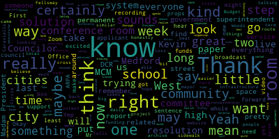
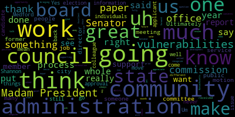
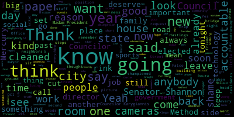

[Morell]: Council April 26 2022 is called to order. Mr. Clerk, please call the roll.
[Hurtubise]: Vice President Bears present. Councilor carry over. Councilor Collins present. Councilor Knight present. Councilor Scarpelli present. Councilor Tseng present.
[Morell]: President Morell present seven present zero absent. The meeting is called to order. Please rise.
[Hurtubise]: Mr. Clerk, please call the roll.
[Bears]: While I was hoping to go through the new agenda format I will vote yes.
[Bears]: Yes.
[Tseng]: Yes.
[Morell]: Yes. Signing the firm is here in the negative and rules are suspended. 22-337. April 15th, 2022 to President Nicole Morell and honorable members of the Medford City Council for Mayor Breanna Lungo-Koehn regarding the Community Preservation Committee appropriation requests. Dear President Morell and members of the Medford City Council, on behalf of the Community Preservation Committee, I respectfully request and recommend that your honorable body approve the following recommendations of the Community Preservation Committee. requesting the appropriation of $100,000 from the CPA Historic Reserve to the Office of Planning, Development, and Sustainability slash Civic Auditorium and Convention Center Commission for the facade restoration of the Chevalier Theater. The project will be tracked in the Community Preservation Fund by category Historic Reserve. Enclosed, please find a copy of the project summary. Thank you for your consideration. Respectfully submitted, Brenna Lambert-Hearn. I do have the full enclosure, but I do see Roberta Cameron here. Councilors okay with that, we get to get an overview from Ms. Cameron, unless Councilors would like the full enclosure to be read.
[Knight]: Madam President, based upon the review of the paperwork, I see no issue or problem with this, and I would certainly move for approval. We all know that the CPA application is a lengthy process that's properly vetted by at least nine members of our community that serve on various boards and commissions. We've all spoken in favor of how much we support the Chevalier Auditorium and how much we want to see this auditorium be the economic driver in our square. I think facade improvements is something that we've all spoke about in the past I think this is something that I support wholeheartedly and I'm sure that my colleagues do as well, and I'll certainly move for approval.
[Morell]: Thank you. So we have a motion from Councilor Knights to approve second by Councilor Kelly, as you do a word of Cameron here if you could just give us a brief overview of the paper.
[Cameron]: Thank you is the mic on. Yep. All right, so Roberta North Street, and I am chair of the community preservation committee. And I'm here to speak about the off-cycle application that we received for the Chevalier Theater restoration. This was brought to us in order to close a funding gap as they had received funding from other sources, but the cost of the project has escalated so that that's not sufficient to be able to complete the project. And it is a very urgent project because the damage is ongoing right now and might threaten the safety of patrons entering the theater. So for that reason, the Community Preservation Committee voted to recommend funding for this project.
[Morell]: Thank you. Any questions from the council? On the motion of Councilor Knight, seconded by Councilor Sarpelli to approve the paper. Mr. Clerk, please call the roll.
[Hurtubise]: Yes. Councilor Caraviello? Yes. Councilor Collins?
[Collins]: Yes.
[Hurtubise]: Councilor Knight?
[Collins]: Yes.
[Hurtubise]: Councilor Scarpelli. Yes. Councilor Tseng. Yes. President Morell.
[Morell]: Yes. Senator Nazarian I guess the motion passes. 22-338 April 20, 2022 to the honorable president members of Medford city council regarding the retiree cost of living adjustment increase your president Morell and members of the city council on March 31st, 2022, the Medford retirement board voted with the unanimous vote of five to zero in favor of informing the city council of the board's intention of increasing the maximum amount of earnings subject to the COLA cost of living adjustment from $16,000 to $18,000 effective July 1, 2022, subject to the approval of the City Council. Increasing the maximum amount of earnings subject to COLA from $16,000 to $18,000 will increase the maximum COLA per eligible retiree from $480 a year, $40 a month, to $540 a year. Currently, there are 618 retirees and 450 have a retirement allowance greater than $18,000. The remaining 160 retirees have an annual retirement allowance below $18,000 and will not be affected by the increase. In aggregate, the COLA cost will increase approximately $2,250 a month 27,000 a year. The cost associated with the increase will be funded from the pension fund and will not affect the city's fiscal year 2023 budget. The cost of the city will be included in the next actuarial evaluation currently scheduled for January 1st, 2024. If you have any questions, Chairman Rick Jordan and I will be in attendance for the April 26th meeting. Sincerely, Mark Minervini, Executive Director. Councilor Knight.
[Knight]: Madam President is a member of this fund I am very grateful that the board has moved in its divine wisdom to make this cost of living adjustment applicable to more members in our system. Ultimately, when we think about these individuals that are receiving these benefits, these are the people that are the ones that made our city great. These are the ones that worked for 30 plus years dedicating their lives to public service so the metric could be the city that it is or once was. So with that being said, I thank the retirement board for their efforts I think Mr. Jordan and Mr. Minerva especially, and I will move approval of the paper.
[Morell]: Any discussion from the Council? Councilor Karygiannis. Councilor Karygiannis.
[Caraviello]: Councilor Karygiannis. Councilor Karygiannis. Councilor Karygiannis.
[SPEAKER_05]: Good evening, President Morell, naming City Councilors. My name is Rick Jordan. I'm the Chairman of the Metro Retirement Board. With me is Mark Minervini. He is the Executive Director of the Retirement System. We're here to request, through you, an increase in our base, our COLA base it's called. a little bit of history, I'll use the year of 2021, because I have those numbers already prepared. But for that year, we netted a 17.3 increase in our returns. we went up to $259.5 million in value. In the past nine years, our retirement board has grown nearly 33%. It's over $9 million in the last nine years. Year to date, figures, we've been positioned, it's been a down market for the first five months of this year, first four months of this year. The S&P is down 10% sometime between yesterday and today. Our returns are down minus 3.8% because of the way we are positioned, conservatively positioned, and we've done very, very well for the members of our retirement board. If you, I understand this is very complicated stuff, retirement stuff, but what we're looking for is an increase for our members from $16,000 a year. That's the base that we present our cost of living increase on, 16,000. We wanna go to 18,000. It's not a very, very large amount for us to absorb, but it's something that we feel is required based on inflation, especially within the last six, eight months. And with your help, we can do it. So if you've got any questions, see what we can do for you.
[Morell]: Thank you, Mr. Chair. Councilor, I don't know if your hand is up again.
[Knight]: Yes, I'm just wondering if you could give us a breakdown as to what our unfunded pension liability is. Yep, so the percentage is what our percentages of the even if that makes it easier. We're at 64% funded 64% funded and do I know we were we were on a, we were at a great clip to comply with the directives to, you know, make ourselves so sustainable and fully funded. Are we still on track or has the second recession set us back a little bit in that regard.
[SPEAKER_14]: Yeah, we're still on track. We had some very strong returns last year. Just as Rick mentioned, 17.3% return net of fees. That netted us just a little under 40 million in investment. So right now we're on target to be fully funded by 2033. And what's the deadline that they gave us?
[Knight]: 2040. So we're seven years ahead of schedule.
[SPEAKER_14]: Correct.
[Knight]: Excellent job. Excellent work. Thank you very much.
[Scarpelli]: Yeah, I just want to thank you too I think this is a difficult position. And I know when there's ever a question. You're always there to help so we appreciate all your hard work. Thank you.
[Morell]: Any further discussion from the council. I believe we had an original motion. Mr. Clerk, please call the roll. Vice President Bears. Yes. Yes. Yes. Yes.
[Hurtubise]: Councilor Scarpelli. Yes. Councilor Tseng. Yes. President Morell.
[Morell]: Yes. So then I get the motion passes. Thank you both for being here.
[SPEAKER_05]: Thank you very much. Madam President. On behalf of our members, we thank you very, very much. Have a good evening. Thank you too.
[Bears]: Thank you. Motion to take paper 22-336 under suspension. So moved. Seconded by Councilor Knight.
[Morell]: Mr. Clerk, please call the roll. Can we take it because we're still on it.
[Hurtubise]: You can still take it though, now that I got the roll call.
[Morell]: Okay. Okay. Yes. Yes. Yes. Yes. Yes, 70 in front of you and then I get the motion passes to to dash 336 April 22 2022 for Rebecca Amani culture have seven Rebecca, thank you for your interest in serving on a border commission with the city of Medford. I'm pleased to appoint you to the term to a term To the Medford Board of Election Commissioners, which expires on March 30th, 2026, please take the enclosed appointment letter to the office of the city clerk to be sworn in at your earliest convenience. Thank you for your continued commitment and dedication to the city of Medford. I'll read the other paper I read in reverse order, because they have the same number. April 22nd, 2022, the Honorable President and members of the Metro City Council, regarding the Board of Elections Commission appointment. Dear President Morell and members of the Metro City Council, I respectfully request and recommend that your Honorable body confirm the appointment of Rebecca Amami, a Democrat of 12th shift at apartment seven to the Election Commission for a term to expire March 30th, 2026. A copy of the appointment letter is attached. Thank you for your kind attention to this matter. Sincerely, Brenna Oliver Park. We do have this before us tonight to fill out the last spot on the election commission, and the council was presented a letter I believe that you can stop not be here tonight so the council just sent a letter so what they said last week, as far as why their faith in appointments there and I know Rebecca is unable to be here tonight as well.
[Knight]: No, just refer to a committee of the whole Madam President to interview the applicant.
[Scarpelli]: Like I said, she's probably a wonderful person. I just, if I didn't see a resume or have anyone talking on behalf, I don't know who she is. So if I can, I don't know if we go to committee of the whole, but just to get her information, if there's any way that maybe for next week, if we can, you know, just table to next week. Yeah, just to, I'd like to get the background if we can.
[Morell]: Well, yeah. I mean, we do have, Director Beresford, we do have Sandy Gale here.
[Bears]: Okay, I was gonna say if we could maybe hear from Sandy Gale, but, you know, I didn't know Mr. Nardella. I didn't, you know, I... At least, I'm saying at least there was a resume, you know, there was... Was there?
[Scarpelli]: Yeah, at least I saw it. Well, I'd be happy to hear from you. Yeah, no, if that's the case. I just wanted some information.
[Gale]: Madam Mayor, Sandra Gale, election coordinator. I cannot speak for the administration and I won't. However, I can tell you that the candidate has been fully vetted and I'm sure that when she applied to be on the commission, one of the requirements is to produce some sort of CV or resume or something. I have been told by one of the other commissioners who was approved last week that she does have community involvement. And I would ask that the council move forward to confirm this candidate so that we can get our commissioners in place and we can continue to move forward with what we're doing with the elections department. She has been fully vetted. And that was done by me.
[Morell]: So we have do you want to keep your motion.
[Knight]: Well my motion would be to have a committee of the whole to meet with the applicant to see who they are I appreciate the work that Sandy's done. I glad that the administration finally stopped sitting on their hands after the primary election of last year to come around and start appointing people to these boards. Ultimately, we're in a position now we're up against a wall. Right. We're up against a wall. We don't have anybody that can even approve nomination papers for candidates that are running for state office right now in our community, because since September of 2021, the administration hasn't acted on vacancies that are in the registrar's office. So much so that this council had moved to change the format of our elections office to establish an election commission from a board of registrars of voters. So it's very frustrating to be put in this position. I remember when I sat in that chair next to me a long ago when I had this was almost a quote that she'd say you know how can you give us something today and expect us to vote on it with no information. I appreciate what Sandy's done in the office and I also appreciate what she has to say but this candidate has not fully been vetted. The reason this candidate has not been fully vetted is because it requires Council approval, and the Council hasn't approved this candidate, and that is the vetting process that is the check and balance that we have for right. That is the advice and consent process that's established when we establish one of these elections commissions. So my theory and my feeling would be that each one of these individuals should be put through a committee of the whole process, where we get to interview them, ask them some questions, talk to them and feel comfortable with them. Because ultimately, we want someone that's going to be impartial, someone that's not going to bring politics into the game, someone that's going to act in the best interest of this community and not as an activist. And those are things that you really can't find out unless you talk to somebody. So those are my concerns with this. And that's why I call for a committee of the whole, I'd let my motion rest on the table and hope a colleague would second it.
[Gale]: Madam President, if I may. All of the nomination papers that we had been holding in queue were certified as of Thursday of last week. I sent out an email notifying and thanking everyone for their collaboration in that effort. Other than that, we are not behind the eight ball on anything that we're moving forward on. the administration has been open to, this is what we need and this is how we need to get it.
[Knight]: So in that point, if there's no hurry, then let's have the committee of the whole, it sounds good to me, I like it. We're not behind the eight ball and we're in a good spot, then let's vet this properly.
[Morell]: I do just want to note that last week there were three, there was actually 4% of the council, three were already voted through, so just noting for the process when you weren't here. others?
[Knight]: Yes, yes, I was not. I had a child care issue. Um, was not able to make the meeting. You're correct.
[Morell]: It's the last part.
[Knight]: Not to say that the motion would have been the same had I been there. It just, uh, the motion's gone and seconded so we can move on.
[Morell]: Is there a second? There is no second for council next motion.
[Scarpelli]: So I think what I was saying before it was kind of, it's just, I, it's either we know an applicant or we would read their resumes. So we have an idea. I don't think I don't need a committee the whole meeting I think that if you read someone's resume I get to see who they were what what their background was I think that would be enough for me so to me to table this until we get just the resume this week to vote on it next week. I don't think it will hold us up that much, but I just think that. It, to me, that's, you know, we've gone through, like last week, we voted, like I said, I knew a few when I saw our resumes. So to me, that gave me enough confidence with the, you know, the background check that was done by our city administration. So that would be my motion.
[Morell]: Okay. There is a motion on the table to table this from Councilor Scarpelli, and that is not debatable. I do see Councilor Collins.
[Collins]: Thank you, President Morell. Yeah, I just wanted to note, in general, I actually really do agree with points raised recently by Councilor Knight, I think that in general, you know, if something comes before us for approval, it shouldn't be a rubber stamp, it should be a reasoned and intentional decision. That said, in this specific case, because we didn't hold a Committee of the Whole for the three applicants that were approved last week, I don't know that it would be fair in this case to hold a Committee of the Whole for Ms. Imani. I would support the motion to table this for only one week to take it back up again in a regular meeting next week. Just to maintain the consistency, keep things moving along because that's what our newly minted election commission needs. But in the future, I would support having more intentional process for approving commissioners for anybody. Thank you.
[Morell]: On the motion of Councilor Scarpelli to table the paper for one week.
[Knight]: Point of information. Is there any particular information that we'd like to request from the administration prior to us tabling this paper so that they're aware that there's something in particular that we're looking for whether it's just a resume a CV letter of support from the mayor, or whatnot. I think, do we want the applicant to attend the meeting, or would a resume suffice do we want the applicant to attend with a resume.
[Scarpelli]: First of all, we've done in the past. We've done in the past is we've seen, like I said, giving you example, Mr. Miller and I've known him. Personally, I know his background, and I'm confident with what I know. I also, I, other, other, other. other participants resumes that to me, that's fine. I think just the resume, plus the added vetting of Sandy and her staff and the administration, I think that all I just wanna see is what their background is. I think that to me, that's all I need. So that's all I would ask for if someone wants to add to that, you're more than welcome. But right now, I think a simple, their resume just to get a better idea of what we think personally, I think it's important.
[Knight]: I'd just like to add a copy of the application as well then Madam President.
[Bears]: Sorry, my president. Just, I would certainly support creating a more thorough system for how we approve appointments from the administration. I just wouldn't feel comfortable treating this applicant differently than we've treated the applicants in the last week. So just having a committee of the whole, I think that would mean we did three at once and then one separately. I know that's no longer on the table, but I just wanted to put that out there. I think we have to treat everyone the same. I'm fine with tabling for one week. So I won't debate that.
[Morell]: On the motion of Councilor Scarpelli, seconded by Councilor Knight to table for one week and get a copy of the resume and application from the administration. Mr. Clerk, please call the roll on your right.
[Hurtubise]: Vice President Bears? Yes. Councilor Caraviello? Yes. Councilor Collins?
[Collins]: Yes.
[Hurtubise]: Councilor Knight?
[Collins]: Yes.
[Hurtubise]: Councilor Scarpelli? Yes. Councilor Tseng? Yes. President Morell.
[Morell]: Yes, Senate affirmative during the negative, the motion passes. Do I have a motion to revert to regular business? I have a motion for Councilor Scarapelli to revert to regular business. Seconded by Councilor Tseng. Mr. Clerk, please call the roll.
[Hurtubise]: Please second. Vice President Bears.
[Morell]: Yes. Yes. Yes. Yes. Yes. Yes.
[Morell]: We're taking records first. The records of the meeting of the April 19th, 2022 were passed to Councilor Tseng. Councilor Tseng, how did you find the records?
[Tseng]: Found them in order and I move for approval.
[Morell]: Second. Councilor Tseng, seconded by Councilor Knight. Mr. Clerk, please call the roll.
[Hurtubise]: Vice President Bears. Yes. Councilor Caraviello. Yes. Yes. Yes.
[Collins]: Yes.
[Morell]: 22-330 offered by Councilor Knight, whereas April 5th, 2022 commemorate the 17th anniversary of the passing of the late State Senator Charles E. Shannon Jr., who represented Medford with integrity and compassion in the state legislature from 1990 to 2005. Be it further resolved that the Medford City Council hold a moment of silence in his honor, and be it further resolved that the April 26th, 2022 Medford City Council meeting be dedicated to his memory, Councilor Knight.
[Knight]: Madam President, thank you very much. Charles Shannon was a mentor of mine. I had the opportunity to work for him from 1999 until his untimely passing. He was a United States Army veteran, a retired police officer, and a Massachusetts state senator. He had over 50 years of government service to this Commonwealth of Massachusetts, the United States of America, and also the city of Medford. And there are many things that Charlie did in his tenure as the Massachusetts State Senator representing Medford, such as supporting marriage equality, supporting universal health care, supporting the extension of the Green Line, which we're now seeing 17 years after his passing finally come to fruition. These are many of the items that Charlie worked on that he helped put in motion. Not only that, he was one of the most prolific constituent service senators in the state legislature during his tenure there. He was someone that never left anybody behind. I had the opportunity to work for him with Councilor Caraviello's son for a summer. Council marks former Council marks was a staff member and Senator Shannon's office as well. He was just a great mentor to many people and a great friend to many, but also he was a great representative for this community in Medford in the state legislature he always delivered for us when it was time to deliver. And if you go down to Shannon Beach in Winchester Medford line, you'll see that that was renamed in his honor, recognizing some of the achievements that he's done in the town of Winchester where he But Charlie was a great friend he passed away 17 years ago and I hope it's important that everybody recognizes the work that he's done and that we keep his memory alive. As we continue to go on. People have always said that someone has always done a better, better than we have before us and Senator Shannon was one of those people. I hold myself with great pride, having the opportunity to work with them in great humility, having the ability to recognize that I could ever fill his shoes. So with that being said, I'd ask my council colleagues to support me in this measure and uh, dedicating this meeting to him and having a moment of silence, uh, to recognize all the work that he did on behalf of our community. Uh, he passed away of a very public battle with cancer, uh, over three terms as a state Senator. Um, the Senator battled cancer. I remember going to his, uh, hospital room at the Dana Faba, bringing him the. State Senate calendar and, uh, working with him while he was in isolation because he was having, um, bone marrow transplants while he was still going to work every day. I mean, that's just the type of person he was. He was very dedicated to this community and to his job. He did his best to never miss a vote while he sat there and battled his illness. So it's something that was really amazing to watch, to see how much he loved serving the public and how much he loved fighting for those that were in need. And it's something that we should all really aspire to. So with that being said, I asked my council colleagues to support the matter.
[Morell]: Thank you, Councilor. Councilor Caraviello.
[Caraviello]: Thank you, Madam President. I want to echo Councilor Knight's comments on late Senator Shannon. He was both my Senator, but he was a good friend to me and my family. And I think some of the values that I sit here with come from things I learned from Charlie Shannon over the years. Again, like I said, don't leave anybody behind. I first met Senator Shannon Long before I was in politics, I was the president of the Method Rocky League, and the DCI was condemning the La Conte rink. And going to the state house and going around, no one would help me. Senator Shannon, I think, was just recently elected. I went to him. Within a few days, he found a half a million dollars to repair the rink and keep it open. That's the reason his picture's in that building. And that's the reason we have a rink still in the city of Medford, because thanks to Senator Shannon. Again, been a good friend to me and my family. And like I said, he was a good man and he was taken too soon from us. So.
[Morell]: Thank you, Councilor Caraviello. On the motion of Councilor Knight, seconded by Councilor Caraviello. Mr. Clerk, please call the roll.
[Hurtubise]: Yes. Yes. Yes. Councilor Scarpelli? Yes. Councilor Tseng? Yes. President Morell?
[Morell]: Yes. Senator Fernandez, during the negative motion passes. We will take both remembrances on the agenda together. 22-331 offered by Councilor Caraviello, be it so resolved that the Medford City Council send its deepest and sincere condolences to the family of Kevin Beltrami on his recent passing. Councilor Caraviello?
[SPEAKER_05]: Thank you, Madam Chair. Kevin Beltrami, a long-time member of the Medford City Council.
[Caraviello]: another one taken too soon. So again, condolences to his family.
[Hurtubise]: Yes. Yes. Yes. Yes. Yes. Yes.
[Morell]: 22-332 offered by Councilor Tsengh. Be it so resolved that the Medford City Council recognize Ramadan and Eid al-Fitr and wish our Muslim community Eid Mubarak. Councilor Tsengh.
[Tseng]: Um, thank you, President Morell. Um, this is a pretty self explanatory motion. Um, Ramadan is a month of joy for a lot of for our Muslim community here in Medford. It's a month where Muslims reflect on their lives where they celebrate values of service, community service, giving compassion. It's a holiday. Um, that's most known for its fasting, but this is something that I think Muslim members of our community take as a moment of joy in their year. And so, because there are so many Muslim members of our community, I found this appropriate. And given, you know, what might be decades long, discrimination and a feeling that they're not seen in our community. I think this resolution is offered in the spirit of diversity. It's motions like this make people feel more welcome and feel more like a part of our community. So I'm asking for the council support.
[Morell]: Thank you.
[Tseng]: Second.
[Morell]: On the motion of Councilor Tseng second by Councilor Caraviello. Mr. Clerk, please call the roll.
[Hurtubise]: Vice President Bears. Yes. Yes. Yes. Yes. Yes. Yes.
[Morell]: Motions, orders and resolutions 22-333 offered by Vice President Bears be it resolved by the Medford City Council that the City Administration urgently provide an update regarding the availability of Medford Community Media Channels through Comcast. Be it further resolved that the City Administration and MCM urgently provide an update on City Council resolution 21-402, which requested the immediate outfitting of the Alden Chambers, City Hall Rooms 201 and 207, and one conference room at the Metric High School with fully up-to-date technology using ARPA funds as quickly as possible to allow broadcasting and permanent virtual remote participation for use by the City Council, School Committee, all City Boards and Commissions, and the City Administration. Vice President Bears.
[Bears]: Thank you, Madam President. First off, thank you for reading my run-on sentence. Yeah, it was a long one. I didn't quite realize how long that sentence got. Kevin, it looks like you have a presentation or a box of some kind. So I'm really excited about that. I brought props just in case. On the first piece, I have heard that that has been addressed, which is great. But it definitely interested in the props. Second one I think this resolution was filed when Patrick was still here so it may not have come to you. So certainly not trying to put you on the spot by any means, but we had this council had requested I had put forward a resolution last year requesting that this room, the Room 207 Council Office, Room 201 Richley Room, and the conference room at the high school get a kind of a tech upgrade using ARPA funds to make sure that we can have some solid video conferencing. So that's just what that's referencing. I'm excited to hear from you. Thank you.
[SPEAKER_09]: I'll say my name and address for record. Kevin Harrington here at my capacity as the MCM station manager, 489 Winthrop Street, Bedford, Massachusetts. Yeah, I'll cut to the chase that you already addressed, Councilor Bears. The issue has been resolved. Thankfully, I do wanna quickly just mention to all of our residents and members who are Comcast customers that wanna offer our apologies for the inconvenience. Unfortunately, in this case, a lot of this was in Comcast hands. If I could have taken a wrench to something and unplugged and replugged things, I certainly would have. But that was just beyond that kind of scope. We did do some basic troubleshooting on our end, but essentially came down to Comcast I have a very long bulleted list of the full timeline that I don't think you necessarily need to get into. But suffice to say, I talked to a tech from Comcast today who informed me that if we have a similar outage like we had, I can contact him directly, whether by phone or by email, and we don't have to necessarily go through a ticketing process that could elongate an outage of this type. So fingers crossed, we don't have to deal with this again. But if we do, we have somebody at our fingertips that can help move this along more expediently.
[Caraviello]: Thank you. I'm constantly bears brought up about room to one or two or seven. Yeah, that was something that Council Falco championed some years back. I have not mistaken that those rooms already have there they should already have cameras in both of those room already. Yes, I know there was a technology package I don't know if we ever kept up with the dues, or the, you know, to keep them up there but I remember, you know, those rooms were, those were live rooms in the past, let's say, and that was something that Councilor Falco championed during his days here.
[SPEAKER_09]: That's right, so I can go through those rooms one by one. I'll start with 207, because that's the room I've spent the most time with and kind of been able to make the most progress with. So when I looked at 207, there is some equipment in there. There's a video camera, and there was a large board or microphone. But the way it was set up, it essentially had to be managed through a desktop computer. It wouldn't have easily been able to connect to any meeting that a commission was doing, they would have had to log into that computer, hook that computer up to the monitor, and it would have been a little bit of a clunky process. So what I was able to do at 207 is I was able to purchase some equipment. That's the props component of it. I essentially have a Jabra 810 speakerphone, which I'll grab briefly. Just because, and I only bring the props not to distract from the substance, but because when you throw out Jabra 8, 10, Logitech X, Y, Z, it's just a bunch of words until you see it. So this I'd use in my capacity at Boston University Medical Campus when we had classrooms about the size of 207 and in fact, sometimes bigger. It's a microphone and speaker phone that connects by USB as well as Bluetooth. But for this purpose, you'd probably want to use USB. And the advantage of it is you can plunk this in the middle of a conference table and everyone sitting around the table can be heard. And you could hear the Zoom audio coming out. So in the likely use case of whatever commission is in 207, you would have whoever's leading it, whoever's hosting the Zoom meeting, they come in with their laptop, they hook up the HDMI to the monitor that's already in there. And they would hook up to this device as well as a webcam, which we're going to have perched in the corner. where the old camera currently is right now. So people would have almost a security camera as view of the entire room. And then this microphone would be doing the heavy lifting of catching everyone's voices in the room, being able to emit the voices that are coming through the Zoom. And the reason why we went with that I talked to the mayor and the chief of staff, where we wanted to get something rolling we, you know, we didn't want to, you know, go through the process of, you know, trying to get a proposal or something like that that might kind of elongate things. So in this case, you know, we'd use the solution in my previous jobs for similar situations. So the equipment's here. We haven't been able to fully install it just yet. That's something I'm hoping to do between now and next Tuesday's meeting, run a couple of tests. And the idea would be anyone with a laptop and USB connection would be able to be in there and run a meeting. We could also look into if we want to have a dedicated laptop that lives in there that people could sign into, that could be an option. We just don't have that equipment purchased as yet. Will it be something that will have a history of? Oh, so if it's individuals using their own personal laptops to run the meetings, it would not be. Because all of this gear is essentially just peripherals. It's essentially just outside equipment. So if one person from Zoning Board of Appeals, for instance, used their laptop that they use for ZBA meetings, None of that material would necessarily be present when someone from the retirement board comes in. If you use a shared laptop, that would probably be the case. If you use a shared laptop and any of that Zoom information that's stored locally would be there. However, depending upon what you're talking about with Zoom, some of the chats are stored in the cloud, that kind of thing. They're not always saved in the device. That's a Zoom account level kind of adjustment you can make.
[Scarpelli]: So for minutes archive isn't that important, don't you think, is there a way that we can that could be capable of all these meetings that our public should be stored and as part of record correct.
[SPEAKER_09]: Yeah, I believe that if there's, I know that there's. Several meetings, if it's run, I think it depends on who's running the meeting, but I know that there's a lot of accounts that are under the city of Medford's Zoom account. They have like an enterprise level account and we've been able to access recordings and that kind of thing for multiple different types of meetings. So as long as those are under that umbrella, those would still be accessible by the cloud. The recordings would be accessible and those kinds of things.
[Scarpelli]: can I make sure that I'll record that with that information that we have this administration just get back to us to make sure we do have that information that that's part of our mission going forward with the new technology. I think it's very important. Is that something that people get back to us to say, I'd like to see the minutes of the meeting or rerun of the meeting for individual purposes. So if we can, that'd be something I'd like the administration to follow up with, please.
[Morell]: the amendment. And just to piggyback off that, whereas council meetings, school committee meetings always has, you know, a Medford community. Are those archived anywhere else other than on the actual website automatically?
[SPEAKER_09]: So automatically, if it's recorded through Zoom, it'll be stored as a cloud recording. If it's not recorded through Zoom, it will not be.
[Morell]: But as there's Medford community media in all of our meetings, school committee, those are always recorded through Zoom.
[SPEAKER_09]: They typically are. They typically are recorded through Zoom. That's usually determined by who is running the meeting. We advise anyone who is broadcasting their meeting either live or recording it to be broadcast later to record through Zoom always. Recording through Zoom for any of these public meetings is a good backup for multiple reasons, but we are also making sure that we have our version of all these meetings that go on to, whether it's the website or that are broadcast on MCM, we have those stored. We have multiple ways of archiving those so that we have those going forward.
[Morell]: So those are on a city server as well?
[SPEAKER_09]: I don't, I don't, on our end, I don't believe it's a city server. We have, we have our, we have, if it's been uploaded to our platform and it's been broadcast through MCM, it lives both on our, we have, you know, a built-in storage server with our CASIS platform. And we also, we're currently are expanding our network accessible storage to have even more storage space to also have backup recordings, the backup versions of those meetings.
[Morell]: Thank you.
[Knight]: Madam President, thank you very much. Mr. Harrington thank you for being here. I do believe when you were given your presentation I heard you say that you spoke with the mayor and the chief of staff and they suggested that they wanted to do this outside of the bid process is that correct.
[SPEAKER_09]: I don't remember if they we use those terms specifically, it was more. The impression that I got is they were fine with getting something like this that we could put together ourselves, just so we could get meetings in there going.
[Knight]: Right, so that would, so what's the, I guess the question is, I mean, anything needs to, any contractor, but I think it's 10 to any, any pervading some services over $10,000, I believe would require it to go out to public bid. So it sounds to me like we're getting this done for far less than $10,000.
[SPEAKER_09]: That's in 207's case, yes. For some of these other situations, I don't know that that would be the case, but in 207's case, yes, this was under $10,000, that's correct.
[Knight]: And where did the funding come from?
[SPEAKER_09]: In this case, because I was not aware of any other methodology I was supposed to use, this came out of the MCM equipment budget.
[Knight]: Okay, so you took it out of your operating funds that have already been appropriated?
[SPEAKER_09]: That's correct.
[Knight]: Okay, excellent. And moving forward for room 207, I mean for room 201 and for the console chambers, what price tag do you think would be attached to that?
[SPEAKER_09]: That's a good question. I can briefly touch on 201. I've been in contact with, forgive me, I don't remember her department, but Teresa DuPont also had some ideas for 201. I'll touch on it briefly. There's a device that I've used in the past as well called a meeting owl. And the hook of that is it's a 360 degree camera. and a wireless microphone and speakerphone built in. So instead of plugging in two devices, you only plug in one. and essentially was looking into maybe trying that out. I was amenable to basically trying these two methodologies out, one in 207, one in 201, see how they both work. If people are finding they prefer one over the other, I'm perfectly flexible to make those adjustments. In terms of, we haven't purchased any equipment on that yet. I'm gonna be in continued contact with Teresa Dupont if she wants to continue to collaborate it.
[Knight]: with me on you tell me, I'm not familiar with who Teresa the point is that you development sustainability, I believe.
[SPEAKER_09]: That's correct. She was on is the IT department.
[Knight]: Did you say it community development.
[Morell]: He's in the planning department, I believe.
[Knight]: We must be more like an IT when this won't be more of an IT function than community development.
[SPEAKER_09]: Yeah, so my understanding is she was involved in an email. She was added to an email thread because she had the suggestion. And so I was looped into the email thread. I believe based on the email, I don't have it in front of me at the moment, but she has an AV background from previous, in a previous life, as far as I can understand. Um, and I found the device itself that she, uh, references one ideas before we used it, uh, at BU med for during our accrediting, uh, process. In order for a group full of accreditors to talk to people on remote sites. So it, you know, it's something that, you know, this is, this isn't something I'd never heard of before.
[Knight]: So, Oh, no, no, I'm not saying it is. I'm just a little confused as to why we're paying somebody in the planning department to do an it department job or a job that you can do. But that's a whole different ball away. That's all different. That's an administrative issue that has nothing to do with you or the work that you're doing. Ultimately, you say these things and I just go, huh, I don't know what that means. I just know that if you're going to make it work, it'll work, right? But it seems like based upon these methodologies, the way that they're going to work is it's really going to be user driven interface, right? So the chairman of the meeting, it's only going to be as successful as the chairperson of the meeting. So I would suggest then that the administration implement some type of mandatory training process for the chairs of their boards and commissions that are going to be responsible for this, so that they can do it without a hitch. Ultimately, if you have you know 20 somewhat boards and commissions and this responsibility is going to fall on the chair of each. I think that some training module on methodology should be put in place so that everybody comes in with the same sense of comfort and understanding as to how this works, so that the public isn't the one that's the side that suffers.
[SPEAKER_09]: Yeah, 100% agree. You know, once we get some of the testing going and get things properly hooked up, I absolutely, in my previous employment as well, you know, we would train faculty on our AV systems, on the various classrooms it'd be in. I agree with 100% when you get people, their hands dirty when you get them, actually go through the motions. Another thing that I'm a huge, huge fan of, is printed out laminated help guides. So once this kind of gets fully launched, that would be something that we would be implementing is getting a quick start guide with our phone number printed in big letters on it for any and all issues so people can reach out. So yeah, 100% with you on that.
[Knight]: And I would also recommend that one computer be used for each board and commission as opposed to individuals bringing their own individuals using different different computers if we can have one computer in each workstation where each border commission has their own dedicated login I think that will cover pretty much the same concerns that we have but we have the, the, the ability to do it. I just think that we need to make it streamlining consistent across the board that sounds like you're on top of it Kevin so thank you. Amendments, recommendations, however you want to put them forward. We don't necessarily have to vote on them. I think Kevin wrote them down and I'm pretty confident in his ability. He's been great since he's been here, so I'm not too worried about it.
[Morell]: Appreciate that.
[Caraviello]: Thank you. So we have cameras in 207 and 201 already, correct? In 207, yes. In 201, I'm not sure. I thought we passed some years back. I thought there was cameras set up in both. There should have been cameras set up in both of those rooms. could be wrong but I think they were set up because they said we used to do most of our subcommittee meetings and meet homies, you know, and that small woman, and they were always broadcast. Yeah, as far as the other one I, I could have sworn there was cameras. So, if you look into see if you know if we that technology still exists. And again I remember we paid off a lot of money for that stuff. Back then. If we can get a report from the administration where we stand on the IT director's position, if we hired anybody. I haven't heard of us hiring anybody, but I think that's a very important position. And the Office of Sustainability is doing, they seem to be the most important office in the building. If they're involved in this, that this is not what they should be doing. They should be doing what they're doing. But again, I don't know where we are with the IT director. Again, in this day and age, not having an IT director, I think it's just a recipe for disaster.
[Morell]: Thank you, Councilor Karwielik. How's our state?
[Tseng]: I think you read my mind when it came to the quick start guide. So that point is addressed. I just had one question. I wonder if you could also get a USB to USB-C converter. He's already got it. No, just because, you know, a lot of new computers are, you know, they're, it's USBC. And I think a lot of people walk into a meeting room, not, not knowing, right, that you need that converter.
[SPEAKER_09]: So thank you so much. Sure. And, and, you know, not mean to be nothing to make it too, too light. I do. This is also we're going to be testing all this equipment, and make sure that the USBC, you know that hub will properly identify the peripherals, and that kind of thing. I just want to briefly touch on Councilor Caraviello, I'm going to take a closer look at 201. If it's anything like 207. 207 is set up with a camera with it's like a standard camera that goes BNC out to my head. I swear I'm not making these up. I'll put it in a less lingo and a little bit more clear. Essentially, it's a standard video cable. It's not USB. We wouldn't be able to hook it up to a computer. And the way that system is currently set up, I don't think it would be as agile and wouldn't be as, and potentially not as reliable as a newer solution that we'd be able to implement to have meetings in there. But I do understand what you mean. There is a camera.
[Caraviello]: Yeah, I think we spent about $100,000 for the technology and all this stuff back then. And I know it was supposed to have been updated yearly and I don't, it was new and they say, I don't know where it went awry. But yeah, you're over my head. I'm that guy that's on TV, you know, he shows you your father and You know that commercial? That's me.
[SPEAKER_09]: So I'll keep it the gazindas and gazoutas. This goes into this, this goes into this.
[Caraviello]: I just want to put it on, I want it to work.
[Tseng]: I have used the device you brought in before. It works well in the classrooms I've been in. And this is why people elected a 21-year-old.
[Morell]: Are you good. Yeah, I'm good.
[Bears]: Thank you. And I can only imagine what Kevin would do with $100,000 right would have a bar room full of boxes. My two questions are, one, so for these two solutions, the 201 and 207, all we would need in order to go broadcast would be to have MCM in the Zoom room with us, right? That's correct. Okay. Yep. So we can live broadcast. If MCM's in there, we could set up the recording and it'd be through MCM and through Zoom. So we could have a double backup, it sounds like. So that sounds great. Yep. About the other two spaces, it sounds like maybe the conference room at Medford High School that that might take, that might not have any infrastructure. Have you been able to take a look at that at all?
[SPEAKER_09]: So that one was one I wasn't aware of. So I'm not sure which classroom was already scoped out. I wasn't exactly sure what the scope of that install would be relative to 207-201, or if it's gonna be its own animal.
[Bears]: I don't honestly I don't know the intent and I don't want to necessarily step on the toes of the school committee but I do know that they had used the superintendent's conference room for committees of the whole on occasion so I just didn't want to leave them out of the resolution has that had been a room but You're in the building with you're in Medford high all often so that would be the folks to check with the superintendent believe it's a superintendents conference room. Or maybe a room next door to that and then just in terms of this room, I know we have a solution that works right now. My understanding was that this was kind of a jury-rigged solution that we came up with pretty quickly in 2020. It has generally worked, but we have seen some issues with it. I remember Mr. Gordon talking about some kind of box that we were looking to get for this room, I think, that would have better integrated some of the systems. I'm not an expert either. So just, do you have any updates on this space and maybe
[SPEAKER_09]: Any improvements that might be made here. Yeah, I can answer that. So this, this is one that I agree I've spent time in the booth. You know, I know we had issues with specifically the AV system in house here. you know, to part the curtain a little bit. These microphones individually, as far as we can tell, can't be adjusted on their own. So if someone's quiet, someone's loud, you can't really adjust the gain, which is pretty, pretty challenging. And yeah, I do think the system is a pretty good Given the circumstances when it was put together. I want to give Patrick my sincere. I'm impressed I think you did a great job. If you wanted something that would be a little bit more streamlined, maybe. And also, I've been, I'll be a little bit all over the place because this one's still kind of. it's more kind of nebulous state as of right now. But I've been in contact over email with members Rousseau and member Moose Stone from the school committee. They've expressed some frustrations with the way things are set up specifically. I'm sure you might be able to understand not having, you know, if you're used to the music world, not having a stage monitor. So you can't hear you know, people around in the chambers can't always hear the mic feed super well. You know, the speakers are all going that way and not this way. And among other things, I think member Rousseau mentioned, you know, monitors in front of the Councilors so that you'd be able to see the Zoom without craning your neck 90 degrees. And then in terms of the way the AV is connected in the booth, to kind of generalize, it is definitely a bunch of different components put together in a competent way, but in a way that, you know, wouldn't be super sustainable long term. There's a lot of failure points. There's, from an audio perspective, there's too many gain stages, basically meaning there's too many places along the signal chain that the sound could kind of get either distorted or what have you. In terms of going forward, I don't mean to have everyone's eyes roll back their head. I am not super experienced with putting in, whether it be an RFP, or asking for proposals. I also wasn't exactly sure when I was talking about this with the members of the school committee. kind of who this would be under. I wasn't sure, was this going to be MCM budget? It sounds like from what I looked at the schedule for today, that this would be under the ARPA funds. So I would, you know, I'll have to figure out just the whys and wherefores of how to submit that properly, what is the paperwork, and that kind of thing. but I'm definitely energized and amenable to moving this space forward because it gets a ton and ton of use. And I think we would be open to some of the quality of life adjustments that might make things easier for both the residents who are watching as well as for all of you on the other side of the bar here.
[Bears]: Yeah, thank you. Thank you, Kevin. I think that's pretty much the intent that I have would be to, make this create a permanent option in this room a permanent infrastructure that, you know, maybe it's a little easier to train someone on a little easier for someone to hop in if someone's out out sick or you know, and something that's long term sustainable I think that's really really essential and I mentioned the ARPA funds because I do think this really falls very clearly under, you know, response to the pandemic in that situation and it seems to me to be valid. I do believe an RFP bidding process would go through the procurement office and it would be technically under the mayor. Everything really is under the mayor at the end of the day and under our plan of government. So that, but this is our, certainly our request would be a permanent technological solution for this space that's more adaptive, streamlined and will last for a long time.
[SPEAKER_09]: Sure. And I'll add to that, you know, as that, as the wheels kind of get mo moving with that, uh, I'll be open to any of y'all's input on what you'd be looking for. Uh, you know, don't want to leave you out of that. Wouldn't make a whole lot of sense. Uh, so I'll definitely be looking to, to feedback from all the members of whether it's school committee or city council for what they'd be looking for in a solution. Great.
[Bears]: And something you may not know, there is a, there is a screen up there too.
[SPEAKER_09]: Oh yeah. I've, I've clocked that screen. It's definitely a screen.
[Bears]: All right, thank you very much. Thank you, Madam President.
[Morell]: Councilor Knight.
[Knight]: Madam President, thank you very much. All this talk about IT starts getting me thinking. I know back when the mayor's office tried to force our former IT director to resign under the guise of what was said was IT vulnerabilities, and this council asked for a report back from the administration. We never received that report. I think that, you know, the termination of a former IT director was more around protected union activity than actual performance on the job, but that's just my opinion. But the reasoning that they gave when they terminated our former IT director was that there were IT vulnerabilities here in the city. And at that time, this council had asked for a report back from the administration as to what those vulnerabilities were and what steps they was taking to protect the information that the residents in this community share with their government. in the operations of the day-to-day delivery of services. And I'd just like to have the paper reset to the administration asking for an update because we've never received a response to that paper as to what these IT vulnerabilities are, what steps are being taken to secure them, and whether or not there will be a request for funding in the future necessary to make us so safe. Again, I still question the circumstances of the termination of our former IT director He was in the middle of, uh, of organizing members of the administration to join a labor union. And, um, he was terminated with, uh, really no warning and no progressive discipline. Uh, so it raises a number of concerns for me, but the administration to give a reason. And they said the reason was it vulnerabilities and the council still has not received a report on that. And that's something that could become very costly to this council in this city in the future. If in fact there really are. IT vulnerabilities. We don't know because we haven't gotten the report, but if we do get a report, then we might be able to position ourselves to figure out how much is it going to cost us in the future when the budget discussions start as to how to address these IT vulnerabilities, along with these other very positive IT issues that are coming along that Kevin's bringing to the table. So I'd just like to offer that as a B paper to make sure that the administration responds to the prior paper requesting what the IT vulnerabilities were surrounding the termination of a prior IT director.
[Morell]: Thank you, Councilor Knight. Any further discussion? Councilor Tseng?
[Tseng]: I don't know if you would know the answer to this, but I was curious as to what we do with technology that we don't use anymore. As you mentioned, perhaps trying two different systems and maybe like choosing one over the other, which suggests the other one might be put into a closet or something. I was wondering if there was any program here to reuse the technology in different departments or, you know, different departments in the city for different rooms, maybe to give it to the high school, to the Boke, if they needed it. Of course, a lot of this old technology is stuff that people won't want, but I, you know, for the pieces of technology that we can reuse, I was wondering if we had some program or something like that.
[SPEAKER_09]: Yeah, that's an excellent question. That's not something I'm aware of at the moment. That's something I would love to find out myself. You know, the good news, I would say in MCM and the studio proper is we're currently in the process of, we are updating our technology. And we're going to have, in a lot of cases, it's things that we don't quite yet have. But in terms of, yeah, with obsolete stuff, especially anything with a microchip in it, with lead, mercury, et cetera, has to be handled properly. That's something I, is a good point. I want to look into that myself. I don't know the answer at the moment, but certainly something that I think would be good for me to get a handle on. So that, like you said, in these these rooms, whether it's here or elsewhere, we kind of have a home for everything. So it's not just going to be either collecting dust and storage or, you know, improperly disposed elsewhere. So I take your point. I'll make sure to look into that.
[Morell]: Of course, I mean, further discussion. I just could, from the chair, piggyback on Councilor Tseng and what Councilor Caraviello was saying. It's my understanding that, you know, the large upfront costs of outfitting 207, there was also a whole software program that went with the management of that. I'm curious if there's been cost savings or we're, you know, or we've realized to stop paying for that because we haven't had a committee of the whole in there since the beginning of the pandemic. So it hasn't been being utilized in that way. I would just want to make sure if we're not going to be using that setup, that we're also not paying for the software service that goes with it.
[SPEAKER_09]: Yes. Do you, um, madam president, do you recall the name of the software by any chance?
[Morell]: I do not. If you go, it's not like legislative tracking something, I think it was called by pre pandemic committees as a whole. They exist in that software. I can find it.
[Bears]: It's something like, I don't know why I have the URL, but it's like IQ M two. It's a system that other cities use. It seems to be like a municipal service that's focused on cities. It sounds to me, honestly, a little bit like it's kind of designed to flee cities a little bit.
[SPEAKER_09]: It might be a little bit of a Windows 3.1 solution. Yeah, it is.
[Bears]: The websites in other cities, it's like you have to go to this specific website to access recordings and it does look like Windows 98. Yeah, I can't remember, it may be related to, is it related to the MuniCode service? So maybe through this, it may be related to this Granicus service as well. I've been looking at those contracts, they're kind of wild, but I didn't, I don't know if I have the video one, so.
[SPEAKER_09]: Yeah, so excellent question. So I'll look into that and see if there's, I would certainly help if there's, if it is a SAS situation with some kind of monthly cost, we'll make sure to terminate that. As long as, like you said, as long as it's not bundled with something else, it's actually a la carte and we can extricate it. So that's another good question that I'll look into. Thank you.
[Bears]: Thank you.
[Morell]: Any further discussion? We have the- With approval. that we will take first. Mr. Clerk, you're the language for a ZP paper. Do I have a second on the beat paper? Second on the motion of Councilor Knight on the beat paper second by vice president bears. Mr. Clerk, please call the roll.
[Hurtubise]: Vice president bears. Yes. Councilor Caraviello. Yes. Councilor Collins.
[Collins]: Yes.
[Hurtubise]: Councilor Knight.
[Collins]: Yes.
[Hurtubise]: Councilor Scarpelli.
[Morell]: Yes.
[Hurtubise]: Councilor President Morell.
[Morell]: Yes, 7-0 in the negative, the motion passes. On the main paper, on the motion of Councilor Knight, as amended by Councilor Caraviello and Councilor Scarpelli, seconded by Councilor Caraviello. Mr. Clerk, please call the roll. You have the language for both those amendments?
[Hurtubise]: I have the language for the amendments. Who's the second one?
[Morell]: Councilor Caraviello.
[Hurtubise]: main paper as a minute vice president bears.
[Collins]: Yes.
[Hurtubise]: That's trivial. Yes. Yes. Yes. Yes.
[Collins]: Yes.
[Collins]: Yes.
[Hurtubise]: Thank you very much, Kevin. Thank you.
[Morell]: 22-334 offered by Councilor Caraviello. Be it resolved that the DCR clean the median strip at Route 16 by the Main Street Bridge.
[Caraviello]: This is a second request, Councilor Caraviello.
[Morell]: 22-335 offered by Councilor Caraviello. Be it resolved that the DCR remove the debris and trees left at the woods by Hastings Lane after their tree cutting. Councilor Caraviello.
[Caraviello]: I think we all drive down there from as soon as you turn, you look on both sides of the road and you see mattresses, you see couches, you see all kinds of rubbish. And now as soon as you get up to the Route 16, the bridge on Main Street, that growth hasn't been cut in three years. There's this crap all over the place. And you look down on the side of both of those ramps, crap all over the side of the road. This is my, I request this every year. This is the second, occasionally they come and play, but that hasn't been cleaned in three years. Now, if you're going a little further over to the Hastings woods, which is between, it's right after Hastings lane. The DCI was there last week, cut all the trees down, just dumped them there. Again, that woods was a mess anyways before that. But again, they just cut the trees and just leave them on the ground, just leave them there. There's neighbors there, and the neighbors deserve more than that. And the residents of our city deserve more than what we're getting on that whole road. And I said, Route 16 has just turned into a dumping ground all over the place. And it's about time that someone steps up, either the mayor or we go to our state delegation, get this done, but it's got to get cleaned up. It's filthy. I don't think a sweep has been down there in years. And I say, you know, especially on that main street bridge, the debris is five and six feet tall, there's cans, there's tires, there's everything all over the place. It's about time, it's gotta get cleaned up. Our city deserves more than that. Again, it's something we talked about in the past. The curb appeal of our city is horrible, and that's one of the reasons for it. So again, I don't know if we wanna send a letter to our state delegation to get it done, or, off the mayor wants to call it again. Uh, that it has to get cleaned up by the spring. Can't just let it go another year with nothing happening that think that's for real.
[Bears]: Thank you, Madam President. Yeah, I mean, I'm right there with you on all of this. I think we could basically say, please look at every DCR property in the city of Medford and fix it. And then that's just the beautification type things we're experiencing right now, with very little warning on Fells Way West that they're redoing all of the sidewalk from Mystic Valley Parkway at Wellington Circle all the way up to Fulton Street at route 28. We got that notice like a week before they started the project. You know, now we have people having a hard time again. They've just dug up the new safe routes to school project on Fells Way West, and they're refilling the sidewalks. I mean, it's just a mess. Anyone who lives over there, they're leaving it for weeks. It's hard to cross the street on a street that's already dangerous to cross. I mean, I certainly support improvements and all of that, but it's just not happening in a responsible way and in a responsibly communicated way. And at the same time, you know, in addition to the construction materials that have been left, you know, we have some sections of Fellsway West that are similar to like Hastings Woods, where you have just woods right on the, you know, on the north side of Fellsway West. That's pretty nasty all the time too. And then everything around Roosevelt Circle, which is right where I live, is really just gross. So, you know, I'm not adding an amendment. I'm not anything substantive.
[Caraviello]: I'm just mentioning it. DCR has just neglected our community in a giant way. I don't know if that was on purpose or whatever, but we're a mess.
[Bears]: Yeah, I do know that there is a DCR coalition. There's a report, you know, we did have, remember the Foundation Budget Review Commission report about K-12 school funding? They just did a similar report around DCR funding that says it's drastically underfunded and the state needs to step up. There are people who are advocating around that. So I do want to give a shout out to everyone in the community who has been trying to get the state to step up and get DC artists step up but it's really abysmal so thank you for putting this forward.
[Knight]: Yes, Madam President, one of the many emails I've received about all the wonderful things going on in this community. I heard that the administration was putting together a community wide cleanup. And I would suggest that we forward this resolution to her office and ask that she put this in as part of her community wide cleanup efforts that are coming up in just a few short weeks.
[Caraviello]: This might be over their head.
[Knight]: Shocking.
[Morell]: Seems like Councilor Carvial has rejected you.
[Scarpelli]: Any further discussion sounds like political theater and the council president.
[Knight]: I thought they could do it.
[Morell]: We'll take what you do that three three four first on the motion of Councilor Carlyle seconded by a motion to join.
[Bears]: Right.
[Morell]: Motion to join and approve. All right, there we go. Motion to join papers 2234 and 2235 and approved by Vice President Bears, seconded by Councilor Tseng. Mr. Clerk, please call the roll. It works.
[Hurtubise]: Vice President Bears? Yes. Councilor Caraviello?
[Collins]: Yes.
[Hurtubise]: Councilor Collins?
[Collins]: Yes.
[Hurtubise]: Councilor Knight?
[Collins]: Yes.
[Hurtubise]: Councilor Scarpello?
[Morell]: Yes.
[Hurtubise]: Councilor Tseng? Yes. President Morocco?
[Morell]: Yes, 7-4-0, the negative, the motion passed.
[Caraviello]: Madam President?
[Morell]: Councilor Caraviello?
[Caraviello]: Before we adjourn this evening, if I could take a moment to, a little sorrow tonight, we're losing Kinga Burundi. She's going up to the big house, going up to the state house. Going up to the big house there, and I just want to thank her for her work. I've told her personally, and I think she's probably the best reporter we've had since I've been on the city council. And again, she's been fair and honest with everybody, asked the right questions. Just want to thank her for her work, and sorry we're losing her. I know the combination of all these, the regionalization of the papers, people get less and less news now. But again, I just want to thank Kinga for her good work and good luck on her job at the State House.
[Bears]: I want to agree with Councilor Caraviello but I also want to say that, certainly while I respect and enjoy King is coverage. I think that the truest shame and I hope we would all agree is that. The for profit market has decided that this beat doesn't matter. And I think it really does the local government beat is incredibly important. I for one have gone back through the microfilm archives that this city has of our transcript and the former daily mercury and. you know, when we had a 20-30 page daily paper in this community, it was just amazing the things that you can see and you can find. And now, you know, God forbid for all of us now we're going to be, you know, confined to trying to find something on a Facebook archive that doesn't exist from a company that doesn't care about us at all, just to find out what happened in the community. This week, you know, and that goes from everything big to small from city budget and taxes and you know, the great dramas that I've read from the 50s and 60s of our city government, right down to, you know, who won the ballgame and when is the sign up for the local, you know, arts festival or whatever it may be. And I do want to thank everyone who does their best to get that information out there in the ways that we have now. But I think it's a big loss to not have a paper dedicated to covering this community. And I think We all know that the stories here are rich and vibrant and sometimes contentious, and that we will be at a great loss to not have that. So thank you, Councilor Caraviello, thank you. Thank you, Kinga, and thank you to everybody who came before you who reported on this community. And I hope someday soon we'll be able to say that there are reporters back here talking about the city of Minford. Thank you.
[Morell]: Councilor Scarpelli, then Councilor Schell.
[Scarpelli]: Thank you again. Thanks Rick for bringing that up. I know Kenga, you've dealt with a lot of reporters in our days and I think that you have by far been the most fair and we appreciate that. There are times when you don't agree You disagree, you might disagree what you you right but you are always fair, there's always two sides, and at least you've tried you can see that you made an effort to look at both sides and I think that that's that says a lot. I know that it makes me angry and sad for the fact that I talked to one of the one of the editors just a few years ago when she told me that the commitment of this newspaper was really to go back to the roots of community. And here we are looking at the total opposite. So I will express my displeasure to her personally tomorrow again. And I won't hesitate to call them a liar because they lied. I mean, They came to me for two reasons. One, as a city councilor and two, covering my position in the neighboring community, where they wanted to maybe push the community aspect and really get really community based. And instead of doing that, they've turned it all around. And now what I've heard from a lot of people, from all sides, it's just, they're all disappointed that there is no, there is no message to be sent or they can read online or get that paper and share the information that a lot of people still like to get. That newspaper is something that's very important to people's lives. And maybe not to the younger generation, but to the older generation, it's a huge part of what they do every day. And I'm sad that we're seeing that go. But again, I'm sure you'll do great things at the Statehouse, but I'm not happy about that. So, but thank you for everything you've done.
[Morell]: I wanted to thank you as well, Kinga, for
[Tseng]: being one of these, you know, there's certain people you see in the chamber every week and as a new Councilor, it's those people that make you feel welcome and help you ease into the position. And Kinga, you've really helped me personally ease into this job and learn more about, you know, what it is like to be a Councilor just by talking to you. We'll miss you a lot. It really is a shame that corporate interests have decided that local news is going by the wayside. Because, I mean, as as Councilor various has put it, going back into the archives can be an amazing experience. Speaking as someone who comes from the academic realm, someone who works with historians and works with activists, it's actually the historical archives that teach you so much about social movements, about economics, about politics, about what works today and what lessons that we can drop in the past. Actually, a really great example of this is I was in South Carolina right before the pandemic, And there's a lot of organizing there about a local issue, where they're, you know, redeveloping all these condos. And the grounds that they're trying to redevelop is actually historically black. And by redeveloping the grounds, they're massively altering the environment that used to exist there, that black residents have lived off of for years, and all this alterations caused flooding and all of that. But what struck me most on that trip was when I talked to the local activists, when I asked them, how did you even, think about organizing around this issue, or how did you even come to care about this issue? It was really, their answer was going back to look at local news back in the 1920s and 1930s, looking at the microfilms. And so that experience really taught me how valuable local news coverage is to our future. It's not even just about next Sunday or next week, it's about 2080. 2180, right, like when people are looking back at Medford and they're learning about, through local news, they have a chance to learn about what our community looked like and they have a chance to learn about, you know, what has changed in the last X number of years. they have a chance to learn about what environmental justice looks like in our community. They have a chance to look at what economics looks like in our community, or what businesses, or even just social, you know, like who's playing at what baseball game. And it really is a shame that that is going away. It's really, speaking as someone who works with archival material, it's just really a shame that we're not gonna have that in the future.
[Morell]: Thank you, Councilor Osanic. Councilor Caraviello.
[Caraviello]: Thank you, Madam President. Being the older than everyone here, before I was on the council, you had the Method Mercury. And not only did the residents hold you accountable, but the Method Mercury held you accountable. And that was one of the days of Alfresco, as they called it, the poison pen. The Mercury was out here daily, and I said, they scrutinized every move government made in the city. And the papers, they decided who got elected and who didn't get elected by the editorials were strong then and big readership. But now, like I said, the Council of Businessmen, You know, news is important. I mean, like I said, what are we going to do? We're going to get our news off of our telephones and our computers. I mean, you know, not everybody gets news that way. And it's a shame that, you know, I'll call you. I'm going to call Nell again. I've talked to Nell about this. Again, I think it's just a poor, poor decision to leave all these communities in the lurch with, again, No, no news at all. I mean, King, are they still going to have like an online paper or is this going to be a regional thing? Come to the mic. You're a star tonight. You're going to be a star tonight.
[SPEAKER_02]: So what we've been told is that we're going to be covering topics. So that means that I will be covering the State House with a second reporter. There's going to be reporters that are covering development, but it's not going to be Medford's development, it's going to be development through the region. the wicked local region, which is like east of Worcester, Worcester, sorry. So east of Worcester and then down towards New Bedford. And so we're going to be taking topics because they figured out through algorithms and you know, analysts' analysis of who reads what, that people are more interested in general topics than in local news. I beg to differ, but you know, what can I tell you?
[Caraviello]: Again, it's a shame, you know, the newspaper in the past has always played a key role in the community, whether, and not just government events, social events and social things and, you know, sports and everything. And all these, these young, these young people who play sports are never ever going to get to see their name in the paper or picture in the paper, which is a, which is a shame that you kind of look forward, you know, that, you know, you kind of look forward to that. And again, Thank you for, you know, for the short time you did an outstanding job, but I hope someone picks up the gavel and maybe comes in with another paper here because it's a shame to go without anyone holding anybody accountable now. And that's what's gonna happen. There's nobody holding anybody accountable for anything, so.
[SPEAKER_02]: And you did do that. Everybody knows my number, feel free to call me. So, absolutely.
[Caraviello]: Yeah, but I say, you know, you say, you know, in your short time here, you did an outstanding job, you held people accountable and you always spoke the truth, you know, whether we liked it or we didn't like it, it was the truth. So again, I thank you and I hope some other company steps up and comes back here with some kind of newspaper because It is an, it is integral. And they say, not just for the government, but for the social scene and sports scene again, and to have nothing just to keep looking on. And this is the reason people sit there on their phones all day and night because they, again, there's no news coming out of anywhere. Again, I get it. Thank you again for, and you're going to be missed here.
[SPEAKER_02]: Thank you for making me welcome for talking to me. for making my Tuesday nights enjoyable, frustrating, and long sometimes, but thank you so much.
[Morell]: Thank you, Councilor Caraviello, and I echo all my fellow councilors' sentiments. It's a loss for the city, it's a loss for the council, and I thank you for your service, Kinga. Moving on to public participation. Is there anyone on Zoom who would like to speak in public participation, saying so because there is no one else in the chambers? Seeing no hands, that is the end of the new agenda. On the motion of Councilor Caraviello to adjourn, seconded by Councilor Scarpelli. Mr. Clerk, please call the roll. With Councilor Knight is no longer on. Councilor Scarpelli, would you like to adjourn?
[Hurtubise]: I'll just say, yes. President Morell.
[Morell]: Yes, 16 in affirmative, one absent, the meeting is adjourned.
|
total time: 12.95 minutes total words: 2031 |
total time: 9.43 minutes total words: 1722  |
total time: 5.41 minutes total words: 866 |
total time: 12.2 minutes total words: 2605  |
|
total time: 0.93 minutes total words: 170 |
total time: 9.59 minutes total words: 1700  |
total time: 5.41 minutes total words: 909 |
|
{kind=link}
{kind=link}
{kind=link}
{kind=link}
{kind=link}
{kind=link}
{kind=link}